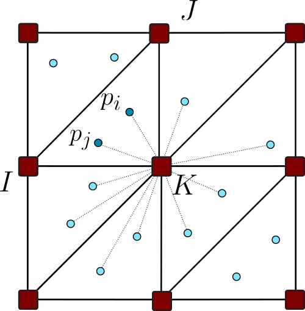
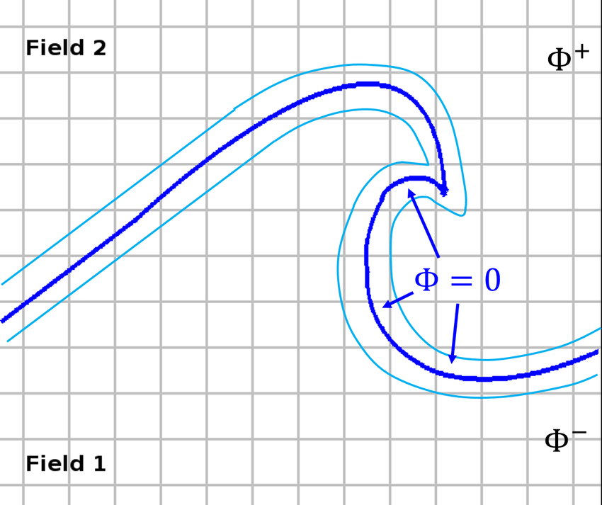
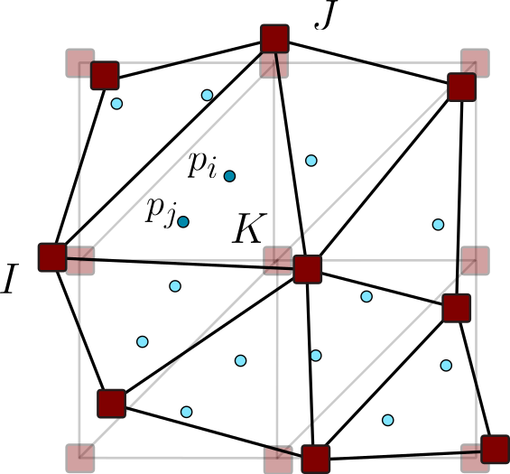
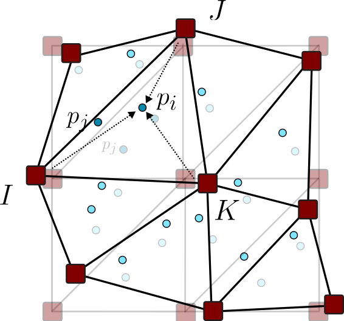
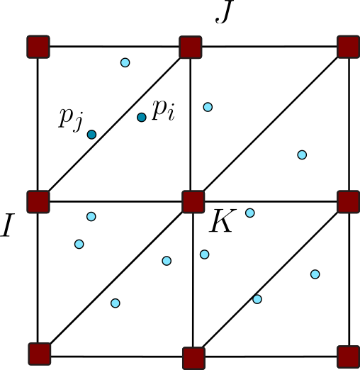
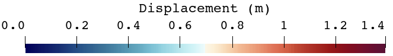
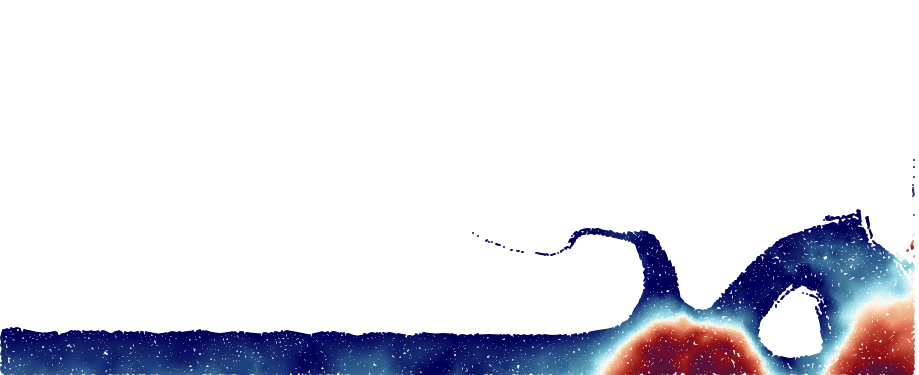
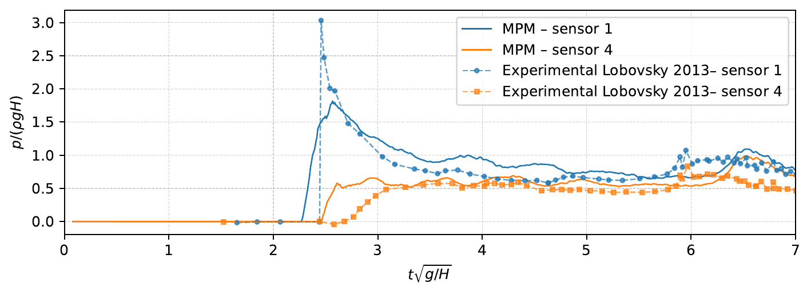

1. TransferParticle information is projected onto the background grid.
Mixed formulations for incompressible solids and fluids
Current research
I develop stabilized Material Point Method formulations for incompressible materials undergoing large motion and deformation, with the long-term goal of reproducing the interacting phenomena involved in extreme hydrological events.

01
Overview
Reproducing extreme hydrological events requires more than following a moving mass. A predictive model must combine large deformation, evolving free surfaces, incompressible materials, and the coupling between water, soil, debris, and structures. These phenomena interact across fluid and solid regimes and can involve impacts, fragmentation, and drastic changes in geometry.
My research uses MPM to address the large-deformation and interface-tracking aspects of these problems, while developing stabilized mixed formulations for the incompressible regimes that arise in both solids and fluids. The longer-term objective is to bring these ingredients together in a unified framework for complex coupled simulations of extreme events.
Why MPM?
In a conventional Lagrangian Finite Element Method, the mesh follows the material. This is highly effective while deformation remains moderate, but under extreme motion the elements may become severely distorted, degrading accuracy and eventually preventing the computation from continuing. Remeshing can alleviate the problem, but introduces additional cost and requires transferring the solution between meshes.


MPM retains a Lagrangian description through moving material points, but uses a background grid that does not follow the material permanently. Because the grid can be reset after every time step, the method accommodates very large deformation without accumulating mesh distortion. Free surfaces are also represented naturally by the evolving particle distribution, without a separate interface-tracking equation.
Two complementary discretizations
The material points move with the material and store mass, motion, and constitutive history. The background grid provides the shape functions and computational structure used to solve the governing equations, and can be reset after each time step.




From avalanches to animation
MPM is widely used for snow avalanches and granular flows because particles can carry complex material behavior through extreme deformation. The same capability also made it attractive in computer graphics: Walt Disney Animation Studios developed its Matterhorn snow simulator for Frozen, using MPM at its core to reproduce large quantities of snow interacting with characters.
02
Research work I · Incompressible solids
Incompressible hyperelastic materials can undergo very large changes of shape while preserving their volume. Near this limit, standard displacement-based formulations may suffer from volumetric locking, an artificially stiff response, and oscillatory pressure fields.
I developed a mixed displacement–pressure formulation in which pressure is treated as an independent unknown. Two stabilization strategies based on the Variational Multiscale framework—ASGS and OSGS—allow equal-order interpolation of displacement and pressure while retaining robustness in static and dynamic problems.

Selected result
This demanding three-dimensional benchmark subjects a hyperelastic column to severe torsional deformation. It challenges the nonlinear solution, the incompressibility constraint, and the stability of the pressure field.
The VMS-stabilized formulation remains robust where an alternative projection stabilization fails after only a few time steps. The analysis also distinguishes the influence of background-grid resolution from the cell-crossing effects associated with the particle discretization.
What it demonstrates: stable simulation of extreme deformation without remeshing, with accurate displacement evolution and a physically meaningful pressure field.
03
Research work II · Incompressible fluids
This ongoing work extends the same continuum-mechanics framework to incompressible Newtonian fluids. The fluid is represented through a rate-dependent constitutive law, providing a unified Lagrangian treatment that can be integrated within an existing solid-mechanics MPM solver.
I developed and compared two alternatives: a computationally efficient irreducible formulation and a stabilized mixed displacement–pressure formulation. Both can capture the global motion of a free-surface flow, but the mixed formulation is essential when a stable and quantitatively reliable pressure field is required.
Selected result
A collapsing water column produces rapid free-surface motion, wall impact, a strong pressure peak, and a reflected wave. The benchmark is validated against experimental measurements of front propagation, column height, and impact pressure. Both formulations reproduce the global fluid motion, but only the stabilized mixed formulation provides the smooth pressure response needed to quantify loads or couple the fluid with a structural solver.


What it demonstrates: accurate free-surface evolution together with non-oscillatory pressure predictions suitable for impact-load evaluation and future fluid–structure interaction applications.
My contribution. I have led the formulation development, software implementation, simulation design, validation, analysis, and scientific writing of this research line, in collaboration with Antonia Larese, Roland Wüchner, and Gioele De Zotti.
This research line is ongoing. Additional results on incompressible Newtonian flows and coupled problems will be incorporated as they become available.